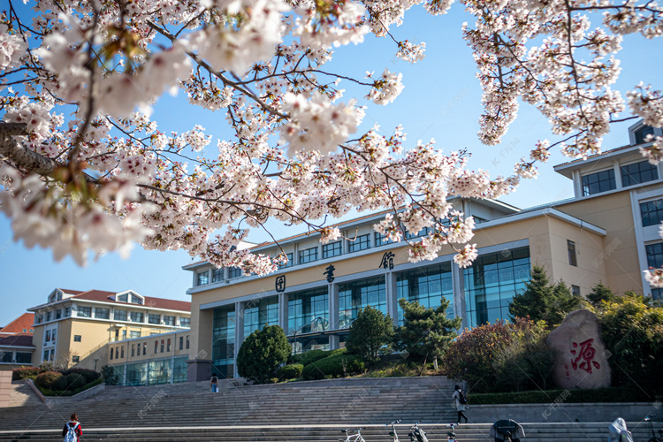
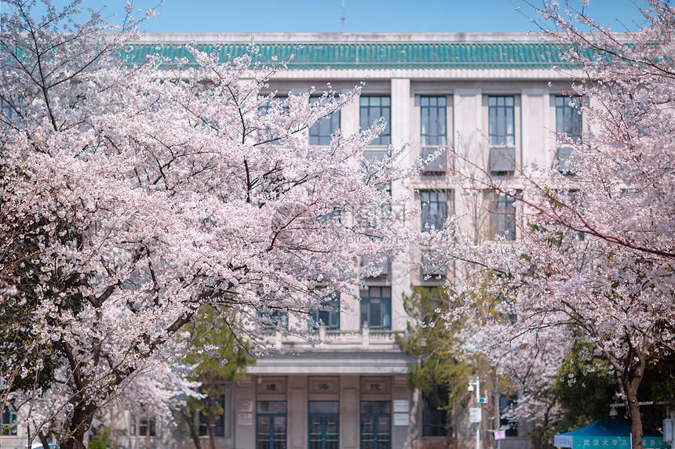

当料峭的寒意被温柔的南风拂去，沉睡了一冬的校园便在春光里缓缓苏醒，成了一首流动的诗、一幅鲜活的画。
清晨的薄雾还未散尽，教学楼的轮廓在朦胧中透着清新，墙角的迎春花最先感知到春的讯息，嫩黄的花穗顺着藤蔓蔓延，像一串串灵动的铃铛，摇醒了校园的静谧。
走在校园的小径上，脚下的泥土混着青草与花香的气息，温润而清甜，往日略显萧瑟的树木，此刻都抽出了嫩红或鹅黄的新芽，枝桠舒展着，仿佛在贪婪地拥抱春光。
阳光穿过新生的枝叶，筛下斑驳的光影，落在干净的窗棂上，落在奔跑的衣角上，落在朗朗书声里，让校园的每一个角落，都漾着初生的欢喜与希望。
春风不疾不徐，拂过操场，拂过花坛，拂过一张张青春的脸庞，把冬日的沉闷尽数吹散，只留下满眼生机与满心温柔。
春日的校园，最动人的莫过于草木竞发、繁花似锦的盛景。校园中央的花坛，成了春天最热闹的舞台。
粉白的玉兰亭亭玉立，花瓣温润如玉，迎着阳光舒展，高雅而圣洁，微风拂过，花瓣轻轻颤动，似少女含羞颔首；
娇艳的海棠开得热烈，一团团、一簇簇，粉霞般铺满枝头，引得蜜蜂蝴蝶翩跹起舞，嗡嗡的声响，是春天最灵动的旋律；
墙边的丁香缀满细碎的花苞，微风一吹，淡淡的清香弥漫开来，清而不淡，雅而不艳，萦绕在鼻尖，沁人心脾。
就连操场边的草坪，也褪去了枯黄，换上了嫩绿的新装，细细的草芽顶着露珠，倔强地钻出泥土，一片生机盎然。
课间时分，同学们围坐在草坪上，或低头看书，或轻声谈笑，或仰望蓝天，身旁是繁花盛开，耳畔是鸟鸣清脆，眼前是青春笑颜，人与自然相融相依，构成了校园春日里最温暖的画面。
每一朵花、每一株草，都在尽情绽放生命的美好，把校园装点得如诗如画。
春天的校园，不仅有旖旎的风光，更有蓬勃向上的朝气与逐梦的身影。
晨光熹微时，教室里便已亮起灯光，琅琅的读书声透过窗户，与窗外的鸟鸣交织在一起，成了春日校园最动听的乐章。
同学们端坐桌前，眼神专注而坚定，笔尖在纸上沙沙作响，在春光里书写着青春的梦想，窗外的繁花似锦，是他们奋斗路上最美的背景。
课间的操场，更是一片欢腾，奔跑的身影、跳跃的姿态、爽朗的笑声，在春光里肆意飞扬。有人在跑道上挥洒汗水，迎着春风奋力奔跑，把青春的活力尽情释放；
有人在篮球场上辗转腾挪，每一次投篮、每一次欢呼，都充满了朝气；
还有人三三两两漫步在春光里，讨论着习题，分享着心事，眉眼间满是少年人的清澈与热忱。
春天是播种希望的季节，校园里的少年们，也在这大好春光里积蓄力量、砥砺前行，他们眼中有光，心中有梦，如同春日里拔节生长的草木，不畏风雨，向阳而生，用奋斗诠释着青春最美的模样。
春光深处，校园的一砖一瓦、一草一木都被染上了温柔的底色，处处流淌着诗意与温暖。
午后的阳光格外和煦，洒在教学楼的墙面上，让古朴的建筑多了几分灵动；
林荫道上，树叶随风轻摇，落下细碎的光影，走在其中，仿佛步入了童话世界。
老教师漫步在校园里，看着竞相开放的花朵和朝气蓬勃的学生，眉眼间满是欣慰；
保洁阿姨细心清扫着飘落的花瓣，让校园始终整洁美好；保安叔叔坚守在岗位上，守护着这片春日里的宁静与祥和。
校园里的每一个人，都在春光里忙碌着、幸福着，平凡的身影，勾勒出最动人的校园图景。
春风有情，滋养着满园草木；青春有志，点亮了整个校园。
春日的校园，是自然之美与青春之美的完美交融，它藏着最纯粹的美好，载着最炽热的梦想，在时光里静静流淌，成为每一个学子心中最温暖、最难忘的记忆。
这满园春色，这少年意气，便是人间最美的光景。

